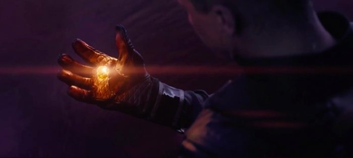

The Soul Stone gives the user the ability to see any soul and to manipulate it. They could also send the Soul to the Soul world. Which is like a pocket dimension inside the Soul Stone. It's first appearence was in Infinity War. It was found on the planet of Vormir. At first fans thought that the Soul Stone was going to appear in the Black Panther solo film, but the director of Black Panther, Ryan Coogler, told people that Wakanda already has it's thing. The thing was Vibranium, Coogler loves the Infinty Stone as much as the fans. But he felt that it would be too much. In addition Marvel didn't intend for the Soul Stone to be in Black Panther. Coogler also had said that Wakanda doesn't need another BIG thing. Because of the fact that Vibranuim is such a big thing, in a sense of how important and strong the metal is. In Infinity War, we all discovered that the Soul Stone was on Vormir. Vormir is the known as the dead planet. There is no living 'SOUL' on the planet except for the guardian of the Soul Stone. The planet had no vegetation for a race to sustain itself. Here's the thing the guardian of the Soul Stone was transported to Vormir in 1945. And who disappeared in 1945 when Cap was fighting the Nazi, RED SKULL. Yep, Red Skull has been on Vormir for the past 73 years. He's been on Vormir because that was his punishment for obtaining the Tesseract. He had told Thanos that the Stone determines whether you are worthy or not to wield the it. He also said that to obtain the Soul Stone, Thanos had to sacrifice someone he had loved. So, Thanos sacrificed Gamora. Gamora being Thanos' favorite adoptive daughter. When Thanos accurired all the stones, he completed his mission and snapped. In doing so, he got transported to the Soul World where he saw the loved one he sacrificed. He saw Gamora has a child and ask "What did it cost?" He responded with "It cost EVERYTHING." Thanos then escaped the soul world to go to farm and see the pe4rfect sunset. I forgot to mention that the Soul Stone let's you travel between the Soul dimension and the real world.
By slashfilm.com CC-BY